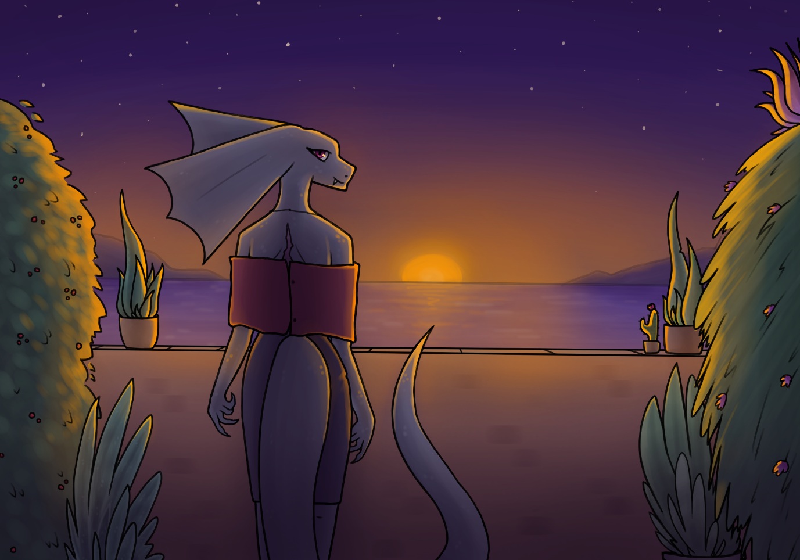
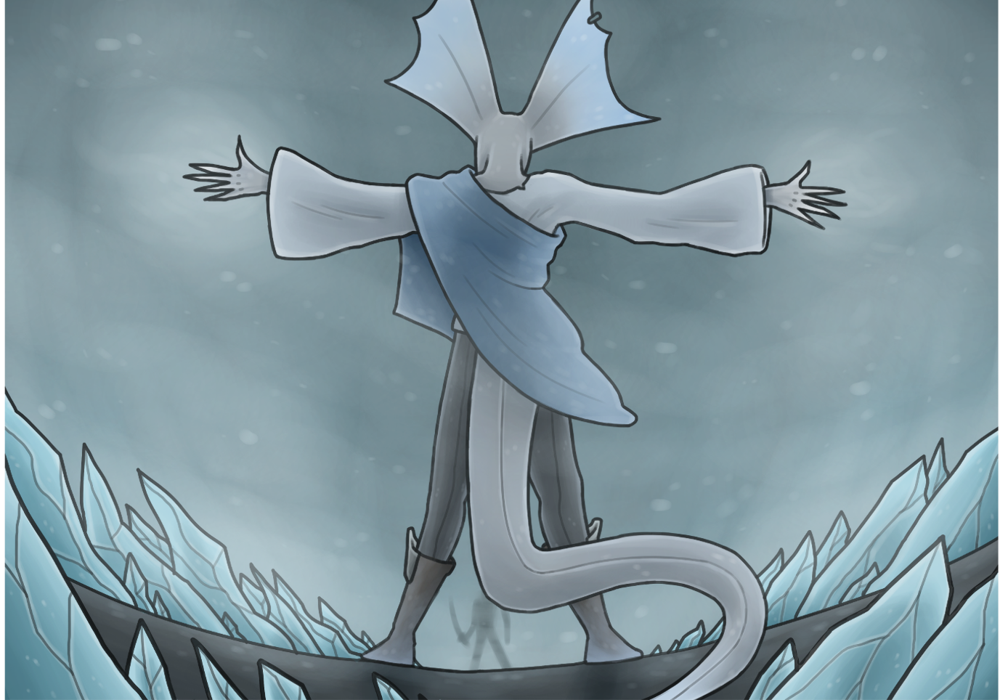

Scene i poze
Radovi na ovoj strani su kompletne scene sa dinamičnim senčenjem i pozama.
U ovim radovima sam pokušao da uhvatim osećanja, momente koji prolaze i retko
se vrate, ja pokušam da ih uhvatim sa svojim radovima.
Balkon na moru
Rad inspirisan snom koji sam imao, u kojem sam se bavio vežbanjem
palete boja, kao i perspektivi od pozadi.

Oluja
Scena oluje leda, u kojoj sam pokušao da se poigram sa dinamičnom
perspektivom, kao i bojama i senčenjem leda.

Druge strane
Nazad na početak
Radovi karaktera
Radovi mrtve prirode i objekata
Kontaktirajte me